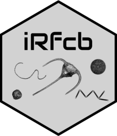

Version dev
iRfcb (development version)
New features
- Added
ifcb_extract_features(), which computes the slim feature set (version 4) and blob masks from raw IFCB data by calling the WHOIifcb-featuresPython package. Features (<bin>_features_v4.csv) and blobs (<bin>_blobs_v4.zip) are written to separate, user-specified folders, existing outputs are skipped unlessoverwrite = TRUE, and bins can be processed in parallel viaparallel = TRUE/n_cores. Acliprogress bar advances as each bin is processed (for both sequential and parallel runs), and interrupting the function (e.g. ESC / Stop) reliably terminates the parallel worker processes instead of leaving them writing files in the background. - Added
featuresandfeatures_refarguments toifcb_py_install()to optionally install the WHOIifcb-featurespackage (and its dependencies) from GitHub, as required byifcb_extract_features(). By default the latest published release is installed;features_refcan pin a specific tag or install the development branch. When installing into an existing virtual environment, the install is skipped ififcb-featuresalready imports successfully (unlessfeatures_refis supplied), avoiding a slow repeated download. - Added a new
dataset_nameargument toifcb_list_dashboard_bins()to optionally restrict the listing to bins from a specific dataset. This argument remains useful for self-hosted dashboard instances that have not yet updated to remove theapi/list_binsendpoint. - Added support for the
IRFCB_PYTHON_VENVenvironment variable. WhenUSE_IRFCB_PYTHON = "TRUE", you can now setIRFCB_PYTHON_VENVto either a named virtualenv or a full path to a venv directory to control which Python environment is activated on package load. If unset, the previous behavior of auto-discovering a venv namediRfcbis retained.
Deprecations
-
ifcb_list_dashboard_bins()is deprecated. The upstream IFCB Dashboard removed theapi/list_binsendpoint on 2026-03-08 (WHOIGit/ifcbdb@8c5839f1), so the function no longer works against the WHOI dashboard and other deployments tracking upstream. Useifcb_download_dashboard_metadata()instead, which retrieves the same per-bin information from the still-supportedapi/export_metadataendpoint.
Minor improvements and fixes
- Additional Python packages installed into an existing virtual environment by
ifcb_py_install()are now installed with a clean dependency resolution (no longer using pip--ignore-installed). Previously, installing packages with pinned, compiled dependencies (such asifcb-features/pyifcb, which pin exactnumpy/scipy/pandasversions) could layer incompatible builds on top of existing ones and corrupt the environment (e.g.ImportError: cannot import name '_spropack'). - The default
gradio_urlforifcb_classify_images(),ifcb_classify_sample(),ifcb_classify_models(), andifcb_save_classification()has changed from the Hugging Face example Space (https://irfcb-classify.hf.space) to a more stable instance hosted on SciLifeLab Serve (https://ifcb.serve.scilifelab.se). The defaultmodel_namehas correspondingly been updated to"SMHI NIVA SYKE SAMS SZN ResNet 50 V6". The Hugging Face Space remains documented as a free alternative for testing and demonstration. - Migrated all user-facing messaging from base R (
stop(),warning(),message()) andutils::txtProgressBarto theclipackage. Errors, warnings, and informational messages now use semantic inline markup (file paths, argument names, function names, values) and pluralization. Progress bars are rendered viacli::cli_progress_bar().cliis now anImportsdependency.